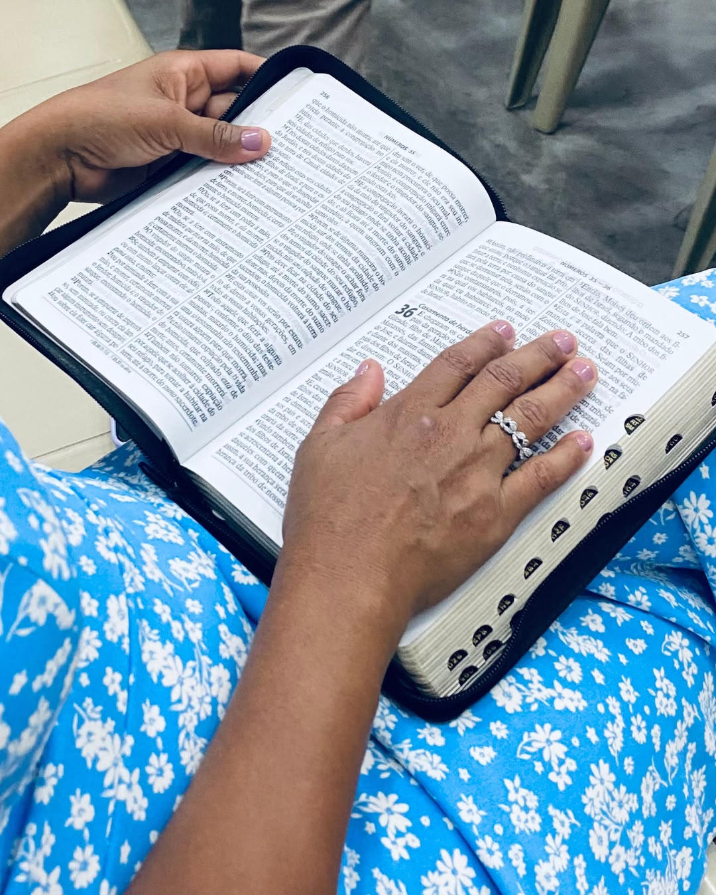
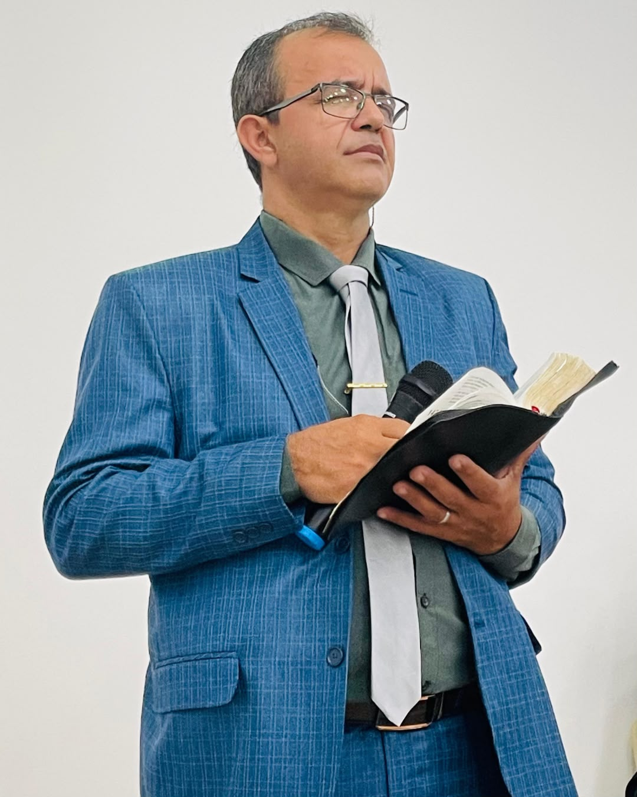
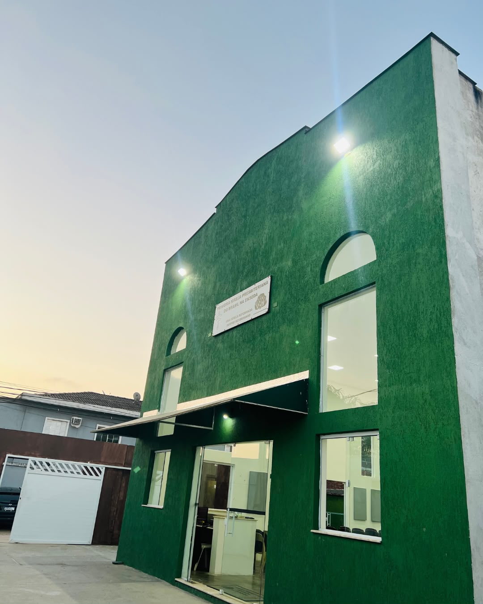

CPP
19h30Encontro da comunidade para comunhão, oração e edificação.
1ª Igreja Presbiteriana do Brasil / Enseada
Uma igreja bíblica, reformada e presbiteriana na Enseada, em Guarujá, firmada nas Escrituras, vivendo pela graça e centrada em Cristo.
Participe conosco
Venha estar conosco. Você será muito bem-vindo em nossos momentos de culto, estudo, oração e comunhão.
Encontro da comunidade para comunhão, oração e edificação.
Um momento dedicado à oração, comunhão e busca pela presença de Deus.
Escola Bíblica Dominical pela manhã e culto de adoração à noite.
Nossa identidade
Somos uma Igreja Cristã, Reformada, Presbiteriana e Confessional.
Cremos no Deus Triúno — Pai, Filho e Espírito Santo — e confessamos Jesus Cristo como único Senhor e Salvador.
Somos herdeiros da Reforma Protestante do século XVI e da tradição teológica reformada. A PIPBE foi organizada em 19/12/2020.
Somos governados por meio de concílios, com participação de presbíteros, dentro de uma estrutura de governo representativo.
Nossa fé é expressa na Confissão de Fé de Westminster, no Catecismo Maior e no Breve Catecismo de Westminster. Esses documentos não substituem a Bíblia; eles sistematizam e expõem aquilo que entendemos que as Escrituras ensinam.
Em resumo: somos uma igreja bíblica, reformada, presbiteriana e confessional, comprometida com a glória de Deus.
Nossa fé
A Bíblia é nossa única regra de fé e prática. A Confissão de Fé e os Catecismos de Westminster são nossos símbolos de fé, subordinados à autoridade das Escrituras.
“Toda a Escritura é inspirada por Deus...”
2 Timóteo 3.16Um só Deus, eternamente existente em três pessoas: Deus Pai, Deus Filho e Deus Espírito Santo.
Mateus 28.19; 2 Coríntios 13.13Deus é o Criador, Sustentador e Governador de todas as coisas. “Porque dele, e por meio dele, e para ele são todas as coisas.”
Romanos 11.36O pecado afetou profundamente a humanidade, tornando necessária a intervenção da graça soberana de Deus.
Romanos 3.23; Efésios 2.1-3A salvação não é conquistada por méritos humanos. “Porque pela graça sois salvos, mediante a fé...”
Efésios 2.8Cristo é o único Salvador, verdadeiro Deus e verdadeiro homem, que viveu em perfeita obediência, morreu pelos pecadores, ressuscitou e voltará.
João 14.6; Atos 4.12; 1 Coríntios 15.3-4O Espírito Santo regenera, convence do pecado, conduz à fé, santifica e capacita o povo de Deus.
João 3.5-8; Efésios 1.13-14Cristo é o cabeça da Igreja, e a Igreja existe para adorá-lo, servi-lo e proclamar seu Evangelho.
Efésios 1.22-23; Mateus 28.19-20Jesus Cristo voltará para julgar vivos e mortos e consumará seu Reino.
Atos 1.11; 1 Tessalonicenses 4.16-17Programação
Confira alguns dos principais momentos de nossa programação.
Encontro de comunhão e edificação.
Momento dedicado à oração e comunhão da igreja diante de Deus.
Escola Bíblica pela manhã e culto à noite.
Ensino
A Bíblia governa nossa fé e nossa vida. Não ensinamos simplesmente uma tradição religiosa. Ensinamos a Palavra de Deus.
“Soli Deo Gloria” — Somente a Deus a glória. O propósito final de todas as coisas é a glória de Deus.
Romanos 11.36; 1 Coríntios 10.31Toda a Escritura aponta para a obra redentora de Cristo.
Lucas 24.27; João 5.39A salvação é somente pela graça, somente pela fé e somente em Cristo.
A graça que salva também transforma. “Sede santos, porque eu sou santo.”
1 Pedro 1.16A vida cristã não se limita ao culto público. Toda a vida deve ser vivida para a glória de Deus.
Romanos 12.1O convertido precisa crescer no conhecimento e na prática da Palavra. “Fazei discípulos de todas as nações...”
Mateus 28.19A missão cristã também envolve amor ao próximo, serviço, misericórdia e cuidado com aqueles que sofrem.
Nossa identidade em uma frase
“Somos uma Igreja Cristã, Reformada, Presbiteriana e Confessional, que tem a Bíblia como única regra de fé e prática, vive para a glória de Deus, proclama o Evangelho de Jesus Cristo, faz discípulos e serve ao próximo.”
Síntese da tradição reformada
“Ao Deus único e sábio seja dada glória, por meio de Jesus Cristo, pelos séculos dos séculos. Amém!” — Romanos 16.27
Nossa missão
Nossa missão nasce da Palavra de Deus e orienta a vida da igreja.
“Ao Senhor, teu Deus, adorarás...” Nossa prioridade é a glória de Deus.
Mateus 4.10“Ide por todo o mundo e pregai o evangelho...” A Igreja existe para anunciar Jesus Cristo.
Marcos 16.15Ensinar a Palavra, formar discípulos e transmitir a fé às próximas gerações.
Mateus 28.19-20; 2 Timóteo 2.2Servir ao próximo e demonstrar concretamente o amor de Cristo.
Mateus 22.37-39; Gálatas 6.10Vida em comunidade
Espaços para diferentes fases da vida e diferentes formas de servir.

Palavra
Em breve esta área poderá reunir os cultos, pregações, estudos bíblicos e devocionais publicados pela igreja.
Canal no YouTubeLiderança
Conheça os homens que servem à nossa igreja na condução pastoral e na liderança da comunidade.

Pastor
Presbítero
Presbítero
Presbítero
Presbítero
Contribua
Sua contribuição participa da vida e da missão da igreja. Para facilitar, disponibilizamos abaixo os dados oficiais de Pix e a finalidade de cada conta.
“Cada um contribua segundo tiver proposto no coração, não com tristeza ou por necessidade; porque Deus ama a quem dá com alegria.” — 2 Coríntios 9:7 (ARA)
Utilize esta conta para a entrega de seus dízimos.
Utilize esta conta exclusivamente para sua oferta destinada à construção.
Antes de concluir a transferência, confira no aplicativo do seu banco os dados do favorecido e certifique-se de estar utilizando a conta correspondente à finalidade desejada.
Estamos aqui
Será uma alegria receber você.
Av. Veraneio, 1384
Balneário Guarujá — Guarujá/SP
CEP 11442-060
(13) 99741-7782
Falar pelo WhatsApp →“Ide, portanto, fazei discípulos de todas as nações.”
